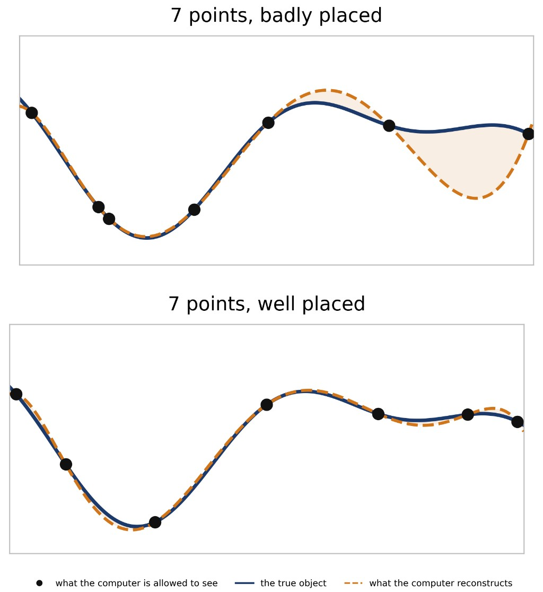

Mario Ullrich
How Much Do You Need to Know?
No computer ever sees the whole picture, and that is where humans are needed.
What I do
I am a mathematician working on algorithms and their limits. A computer never sees a whole object: not a sound wave, not an image, not the solution of an equation, only finitely many values of it. I study how much can be reconstructed from those few values, how to choose them well, and how many are really needed.
It is essentially the game „20 questions“, played against the „real world“. How many questions are enough? Which ones are the smartest? And when is it provably impossible, meaning that no algorithm, however clever, and no computer, however fast, can do it with fewer? That last question is also where my field meets quantum computing: a quantum computer may ask its questions in a different way, which for some problems lowers the number needed and for others provably does not help at all.
Why it matters
Everything digital around you is reconstructed from incomplete data: weather forecasts, medical images, machine learning models, simulations of new materials. Knowing the smallest number of measurements that can possibly work tells you what a task really costs in data, time and energy. The impossibility proofs are just as useful in practice: they mark the problems that stay out of reach in high dimensions, so that effort goes where progress is actually possible.
Key findings
For many classical problems, randomly chosen measurements do nearly as well as the best possible ones — one reason why learning from unstructured data works.
Simple samples of a function are essentially as powerful as arbitrary measurements, at least under typical assumptions on the object to approximate.
If adaptive nonlinear measurements are allowed, a vector of length m can be recovered from only about log(m) of them. We still study possible applications.
Computing expectations in high dimensions depends exponentially on the number of parameters, also for smooth functions. Such problems are hopeless in general.

Further reading
Krieg & Ullrich, “Approximation of functions: Optimal sampling and complexity”, Acta Numer. 35 (2026), 273–457